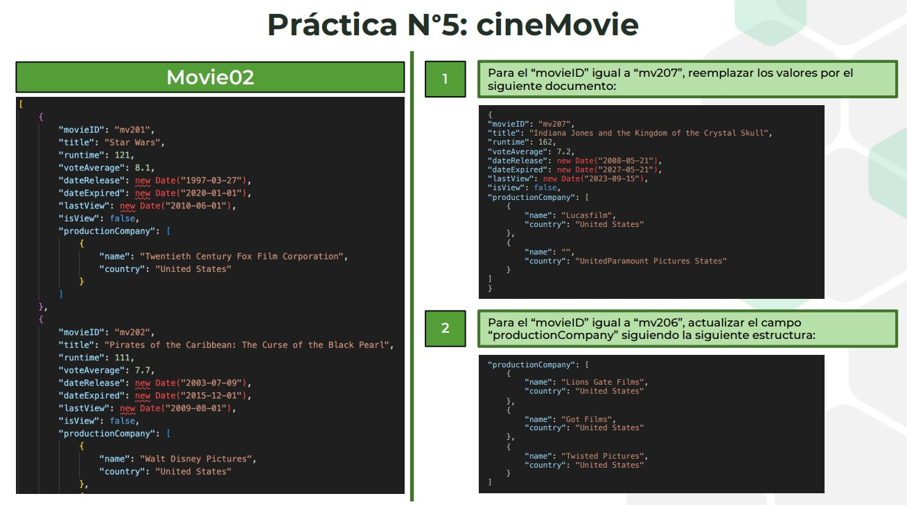
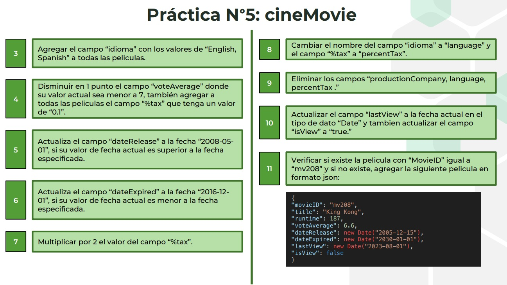

Práctica N.º 5: cineMovie
Objetivo
Aplicar operaciones de reemplazo, actualización, incremento, límites de fechas, multiplicación, renombrado, eliminación de campos e inserción condicional en la colección Movie02 de la base cineMovie.
Datos y criterios
Se parte de las siete películas del adjunto. Las fechas se almacenan como BSON Date y los ejercicios se ejecutan en el orden indicado. Se conserva literalmente el contenido solicitado para mv207; los idiomas se representan mediante un arreglo. El campo correcto es movieID, con m minúscula.
Estado de validación
Script y dataset revisados estáticamente. Ejecución en MongoDB pendiente: Docker y mongosh no están disponibles en el entorno de preparación. Los resultados siguientes son esperados y no constituyen capturas de ejecución.
1. Reemplazar la película mv207
replaceOne sustituye el documento completo y conserva su _id. Se transcribe literalmente la segunda productora del enunciado, aunque contiene un nombre vacío y un país aparentemente mal escrito.
db.Movie02.replaceOne({ movieID: "mv207" }, {
movieID: "mv207",
title: "Indiana Jones and the Kingdom of the Crystal Skull",
runtime: 162, voteAverage: 7.2,
dateRelease: new Date("2008-05-21"),
dateExpired: new Date("2027-05-21"),
lastView: new Date("2023-09-15"), isView: false,
productionCompany: [
{ name: "Lucasfilm", country: "United States" },
{ name: "", country: "UnitedParamount Pictures States" }
]
});2. Actualizar las productoras de mv206
Se reemplaza el arreglo de cadenas por un arreglo de documentos con nombre y país.
db.Movie02.updateOne({ movieID: "mv206" }, { $set: {
productionCompany: [
{ name: "Lions Gate Films", country: "United States" },
{ name: "Got Films", country: "United States" },
{ name: "Twisted Pictures", country: "United States" }
]
} });3. Agregar los idiomas
Se representan los dos idiomas como elementos de un arreglo en las siete películas.
db.Movie02.updateMany({}, { $set: { idioma: ["English", "Spanish"] } });4. Disminuir la valoración y agregar el impuesto
Se necesitan dos actualizaciones: la disminución afecta solo a mv203, mv205 y mv206; el impuesto se agrega a todas las películas.
db.Movie02.updateMany({ voteAverage: { $lt: 7 } }, { $inc: { voteAverage: -1 } });
db.Movie02.updateMany({}, { $set: { "%tax": 0.1 } });5. Limitar la fecha de estreno
mv207 cambia del 21 al 1 de mayo de 2008. El filtro selecciona únicamente fechas superiores al límite.
db.Movie02.updateMany(
{ dateRelease: { $gt: new Date("2008-05-01") } },
{ $min: { dateRelease: new Date("2008-05-01") } }
);6. Establecer una fecha mínima de vencimiento
mv202 cambia de 2015-12-01 a 2016-12-01.
db.Movie02.updateMany(
{ dateExpired: { $lt: new Date("2016-12-01") } },
{ $max: { dateExpired: new Date("2016-12-01") } }
);7. Multiplicar el impuesto por dos
El impuesto pasa de 0.1 a 0.2 en las siete películas.
db.Movie02.updateMany({}, { $mul: { "%tax": 2 } });8. Renombrar los campos
Los valores se conservan con los nuevos nombres.
db.Movie02.updateMany({}, { $rename: {
idioma: "language", "%tax": "percentTax"
} });9. Eliminar los campos indicados
Se eliminan los tres campos en las siete películas.
db.Movie02.updateMany({}, { $unset: {
productionCompany: "", language: "", percentTax: ""
} });10. Actualizar la última visualización
lastView recibe la fecha y hora de ejecución como BSON Date; isView queda en true.
db.Movie02.updateMany({}, {
$currentDate: { lastView: { $type: "date" } },
$set: { isView: true }
});11. Insertar King Kong solo si no existe
upsert inserta el documento cuando no existe; $setOnInsert conserva una película ya existente. Se utiliza movieID, respetando las mayúsculas del campo real. Como se inserta después del paso 10, King Kong mantiene isView: false y su lastView original.
db.Movie02.updateOne({ movieID: "mv208" }, {
$setOnInsert: {
movieID: "mv208", title: "King Kong", runtime: 187, voteAverage: 6.6,
dateRelease: new Date("2005-12-15"),
dateExpired: new Date("2030-01-01"),
lastView: new Date("2023-08-01"), isView: false
}
}, { upsert: true });Resultado final esperado
Ocho películas: las siete iniciales quedan con isView en true y lastView actualizado al ejecutar. King Kong se agrega al final con isView en false y lastView de 2023-08-01. Ninguna conserva productionCompany, idioma, language, %tax ni percentTax.
| movieID | Película | voteAverage | Cambio de fecha |
|---|---|---|---|
| mv201 | Star Wars | 8.1 | Sin cambio |
| mv202 | Pirates of the Caribbean | 7.7 | dateExpired: 2016-12-01 |
| mv203 | The Simpsons Movie | 5.9 | Sin cambio |
| mv204 | Gladiator | 7.9 | Sin cambio |
| mv205 | Charlie and the Chocolate Factory | 5.7 | Sin cambio |
| mv206 | Saw III | 5.1 | Sin cambio |
| mv207 | Indiana Jones and the Kingdom of the Crystal Skull | 7.2 | dateRelease: 2008-05-01 |
| mv208 | King Kong | 6.6 | Inserción según enunciado |
Ejecución y evidencia
Ejecutar el archivo completo con mongosh o mediante el ejecutor Docker adjunto. Este último guarda la salida real en evidencias/ejecucion.txt. El script muestra los documentos después de cada ejercicio y verifica el resultado final.
docker start mongodb-uasd ./run-practica5-cinemovie-docker.sh
Enunciado proporcionado

